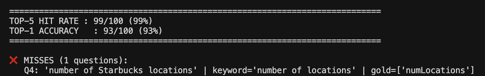
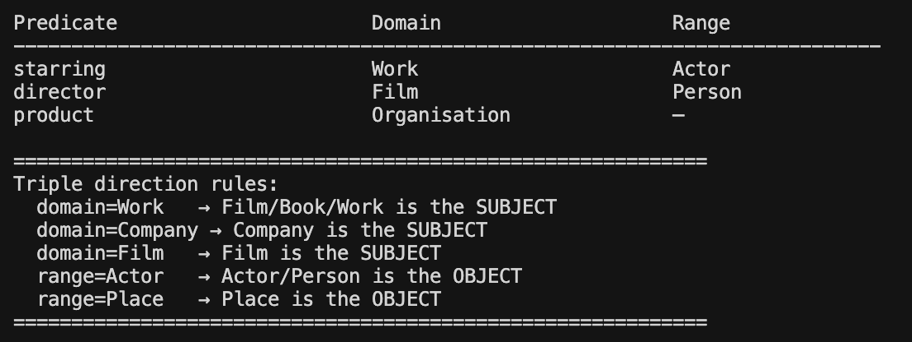

Coding Week 3
June 8 to June 14, 2026
This week was dedicated to building the Ontology Explorer and Schema Introspector nodes. Both were part of my original proposal for improving the agentic pipeline. The Ontology Explorer is responsible for mapping natural language relationship concepts to actual DBpedia predicates, and the Schema Introspector enriches those results with structural ontology metadata before they reach the Query Builder.
Understanding the Existing Approach
The existing pipeline in agentic-kgqa uses a word2vec index built by embedding DBpedia ontology properties using OpenAI's text-embedding-3-small via OpenRouter. At query time, the incoming concept is embedded using the same OpenAI model and the closest matches are found using Gensim's cosine similarity.
This works reasonably well but has two limitations. First, every lookup at runtime requires a live API call to OpenAI which adds latency and ongoing cost. Second, the index contains predicates that are an exact match in both dbo and dbp properties, which means the LLM receives a mixed list of candidates that are exactly similar but dbp instead dbo (dbo:director and dbp:director). Since dbo is the official DBpedia ontology and is naturally our first preference anyway, we can offset the mixed pairs through prompting, but this approach is unreliable when the LLM context is already large and we have a huge prompt, so it eventually starts making mistakes. Hence indexing the dbo and dbp equivalents can add unnecessary extra context to the model which can lead to inconsistent predicate selection.
Choosing Nomic Embed v1.5
My first task was selecting the right embedding model. After researching available options I settled on Nomic Embed v1.5 for several reasons. It is fully open source and runs locally with zero API cost per query. It produces 768 dimensional vectors compared to OpenAI's 1536 dimensions, which means the index is smaller and lookups are faster. Most importantly, it uses a training approach that emphasizes semantic understanding of natural language, making it well suited for mapping informal relationship concepts to formal ontology property names.
For retrieval I considered FAISS but decided against it. FAISS is designed for datasets with millions of high dimensional vectors and benefits from complex indexing strategies like IVF or HNSW. The DBpedia ontology has around 6000 to 7000 entries. At this scale, a simple PyTorch cosine similarity over the full tensor is faster and produces more accurate similarity scores than FAISS quantization would allow.
I ran a benchmark across all 100 DB25 questions evaluating Nomic against the existing word2vec approach. Both scored 99/100 top-5 hit rate. The single failure on both embedding models is on dbp:numLocations, a highly abbreviated Wikipedia infobox property where the semantic distance between the natural language concept "number of locations" and the abbreviated string "numLocations" is too large for any embedding model to reliably bridge.

Building the Index
The index is built from two sources. The first is the DBpedia ontology NT file which provides 3572 dbo entries. Each entry is embedded using the predicate's formal English label combined with its rdfs:comment, which adds meaningful semantic context and produces richer embeddings than label alone.
The second source required more thought. The ontology NT file only contains dbo properties. However, DBpedia also uses a large set of dbp properties which are raw Wikipedia infobox keys with no formal ontology definition. Some of these like dbp:keyPeople or dbp:neighboringMunicipalities have no dbo equivalent at all, and benchmark questions do target them directly.
My approach was to extract only the dbp properties that have no exact dbo counterpart from the existing word2vec file. I skipped dbp properties that share an identical name with a dbo property because the Query Executor will be able to handle those via a deterministic namespace swap at runtime without needing a separate index entry. Including redundant dbo and dbp pairs for the same predicate name would give the LLM conflicting candidates for no reason. The result is 2847 unique dbp entries added to the index alongside the 3572 dbo entries, for a total of 6419 entries.
The Schema Introspector Node
The Schema Introspector addresses a problem that ontology lookup alone cannot solve. Knowing which predicate to use is necessary but not sufficient for generating correct SPARQL. The Query Builder also needs to know the direction of each triple, meaning which entity goes on the left as the subject and which goes on the right as the object.
The motivation for this node comes from how OWL ontologies define properties. Every properly defined ontology property has an rdfs:domain which specifies the type of entity allowed as the subject, and an rdfs:range which specifies the type of entity allowed as the object. This is precisely the structural information the Query Builder needs. A paper by Ugai (2025) on knowledge graph embedding with densely defined ontologies makes a similar observation, noting that existing KGE models underutilize ontology structure because they treat properties and their ontological definitions as separate representations. The Schema Introspector takes the opposite approach by making the ontological definitions of each predicate a first class input to the generation step.
In practice the node reads the DBpedia OWL file and looks up rdfs:domain and rdfs:range for each predicate candidate returned by the Ontology Explorer. It then enriches those candidates with this metadata before passing the full set to the Query Builder. So instead of the Query Builder receiving just a predicate name and a confidence score, it receives structured information including the expected subject type and expected object type for each candidate.
For example, dbo:starring has domain Work and range Actor. This tells the Query Builder that whatever entity is a Work (like a film) must go on the left side of the triple, and whatever entity is an Actor must go on the right. This resolves triple direction without requiring the LLM to reason about it from natural language alone.

Challenges
The dbp coverage gap was the first major challenge. Starting with only the ontology NT file gave a 95/100 hit rate. The 5 failures were all dbp-only properties that have no dbo equivalent. Identifying the right strategy here took some time because simply adding all dbp properties would pollute the index with thousands of noisy infobox keys alongside the well defined dbo properties. The solution of extracting only the unique dbp entries with no dbo counterpart kept the index clean while recovering the missing coverage.
The process of validating that domain and range information actually exists in the OWL file for the predicates that matter most was another challenge. Not all dbo properties have formal domain and range definitions. For those that do not, the Schema Introspector returns None and the Query Builder will fall back to linguistic reasoning. The key insight was that even partial domain and range coverage on the most commonly used predicates provides meaningful improvement in triple direction accuracy.
Integration
Both nodes were integrated into the production pipeline by the end of the week. The existing src/ontology_lookup.py was fully replaced with the new Nomic implementation maintaining the same function signatures so the rest of the pipeline required no changes. The Schema Introspector was added as a new module at src/schema_introspector.py. A build script at scripts/build_ontology_index.py handles generating the index from the local data files.
What's Next
Week 4 will be focused on the Query Builder and Executor nodes. Both have improvements planned that build directly on the enriched context that the Ontology Explorer and Schema Introspector now provide. I will also begin work on the Validator node, which is part of the original proposal and is designed to intelligently route failed queries back to specific upstream nodes depending on where in the pipeline the failure originated.